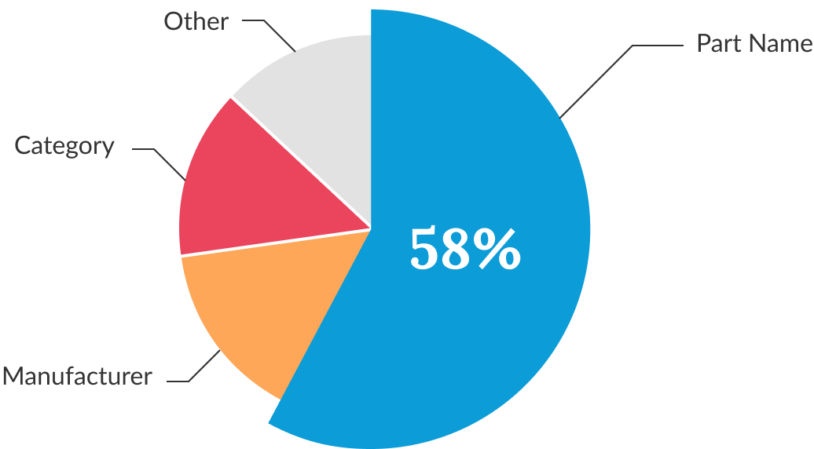

From surveys, we discovered it was difficult for users to search over 3 million parts on Arrow.com. Users expressed that our search algorithm only returned valuable results when they entered a specific part number.
Analytics confirmed that around 58% of arrow.com searches were either based on family names, part numbers or part names. This meant we were capturing users at the end of their sourcing journey instead of the beginning.

RESEARCH
Part Search and Purchase Flow
The electrical component sourcing journey can be complex but follows a typical flow. At the research stage, users know the specific category and some constraints for the part they need. Since our search performed best with part numbers, we believed user were not coming to arrow.com for part research and we could be losing sales to our competitors.
I started to design concepts around what users knew about the parts at the research stage. Was there a way for users to engage with specific categories and parametrics before searching for a specific part?
TESTING
Engineer Feedback
My first design was simple and quick to test with internal users. It exposed the fields our search algorithm ran. Users could manually enter their own values for the fields and perform their search. Through user testing we discovered our users were:
concerned about entering the content into the correct text field and spelling mistakes
confused on the difference between search term and description fields
confused by the full page take over and weren’t able to use the browser back button
SOLUTION
Simplifications & Enhancements
From that feedback, we removed the description field and changed the visual treatment to a modal. Instead of using text input fields, we created a dynamic typeahead drop down fields. This reduced users entering conflicting values that could lead to no search results.